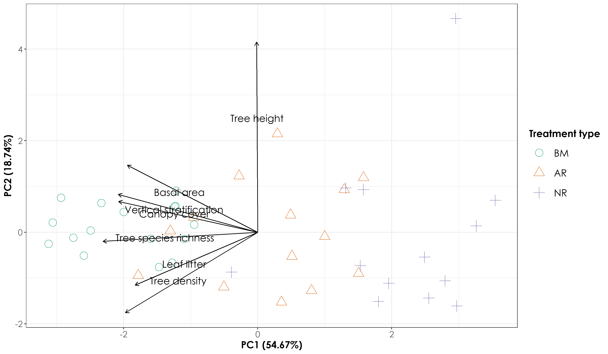

Section 3 Processing vegetation data
In this script, we process vegetation data and examine differences in vegetation structure and composition across treatment types. Note: this analysis is provided as supporting information to showcase differences between AR, NR, and BM sites. In addition, we save results of principal component analyses for future statistical models.
3.1 Install required libraries
3.2 Load the vegetation data
# load the .csv containing different vegetation variables (data collected by the Nature Conservation Foundation)
veg <- read.csv("data/2020-vegetation-data.csv")
veg$Site_ID <- str_remove(veg$Site_ID,"_")
# load list of sites
sites <- read.csv("data/list-of-sites.csv") %>%
filter(Site.code != "OLCAP5B")
# join dataframes to obtain vegetation data for only the required list of sites
veg <- right_join(veg,sites, by=c("Site_ID"="Site.code"))
# renaming restoration type column
veg$Site_type[veg$Site_type=="Unrestored"] <- "Passive"
veg$Site_type[veg$Site_type=="Restored"] <- "Active"3.3 Process habitat structure variables
Carrying out exploratory analysis and preparing a dataframe for further steps
# Counting number of tree species and unique species per plot
treerich <- veg %>%
group_by(Site_ID) %>%
summarise (count = n(), richness = n_distinct(tree_species))
# Calculate average tree height across each unique site
treeheight <- veg %>%
drop_na(height) %>%
group_by(Site_ID) %>%
summarise(height = mean(height))
# Calculate basal area and left join with other data
basal_area <- veg %>%
mutate(basal_sum = rowSums(veg[,c(5:15)]^2)/(4*pi)) %>% group_by(Site_ID, Site_type) %>%
summarise(basal_area = sum(basal_sum))
# Calculate average canopy height
canopy_height <- veg %>%
group_by(Site_ID) %>%
summarise(canopy_cover = mean(Canopy_cover))
# Calculate average leaf litter
leaf_litter <- veg %>%
group_by(Site_ID) %>%
summarise(leaf_litter = mean(Leaf_litter))
# Calculate average vertical stratification
vert_strat <- veg %>%
group_by(Site_ID) %>%
summarise(vert_strat = mean(Foliage_score))
# Year of planting
plantingYear <- veg %>%
group_by(Site_ID) %>%
summarise(plantingYear = unique(Year.of.planting))
# Creating a final dataframe for further analysis
allVeg <- basal_area %>%
left_join(treeheight) %>%
left_join(treerich) %>%
left_join(canopy_height) %>%
left_join(leaf_litter) %>%
left_join(vert_strat) %>%
left_join(plantingYear)
write.csv(allVeg, "data/summaryVeg.csv", row.names = F)3.4 Principal component analysis of vegetation data
# Check for correlations among vegetation predictors
pairs.panels(allVeg[,3:9])
# The above panel suggests that richness is highly correlated with a number of predictors including canopy cover, count and basal area. We will calculate a PCA and keep the top two explanatory axes
vegPca <- prcomp(allVeg[, 3:9], scale=TRUE, center = TRUE, retx=TRUE)
summary(vegPca)
# The proportion of variance explained by the first two axes account for ~73.42%
# Extract PCA values
PCAvalues <- data.frame('Site_ID'=allVeg$Site_ID, 'Site_type' = allVeg$Site_type, vegPca$x[,1:2]) # the first two components are selected
# save the data for use in a GLM later
write.csv(PCAvalues,"data/pcaVeg.csv", row.names = F)
# Extract loadings of the variables
PCAloadings <- data.frame(variables = rownames(vegPca$rotation), vegPca$rotation)
# figure below
# Add a custom set of colors
mycolors <- c(brewer.pal(name="Dark2", n = 3), brewer.pal(name="Paired", n = 3))
# reordering factors for plotting
PCAvalues$Site_type <- factor(PCAvalues$Site_type, levels = c("Benchmark", "Active", "Passive"))
fig_pca <- ggplot(PCAvalues, aes(x = PC1, y = PC2, colour = Site_type)) +
geom_segment(data = PCAloadings, aes(x = 0, y = 0, xend = (PC1*5),
yend = (PC2*5)), arrow = arrow(length = unit(1/2, "picas")),
color = "black") +
geom_point(aes(x=PC1, y=PC2, shape= Site_type, colour = Site_type),size=5) + annotate("text", x = (PCAloadings$PC1*3), y = (PCAloadings$PC2*3),
label = PCAloadings$variables, family = "Century Gothic", size=5) +
theme_bw() +
scale_x_continuous(name="PC1 (54.67%)") +
scale_y_continuous(name="PC2 (18.74%)") +
scale_color_manual("Treatment type",values = mycolors, labels=c("BM","AR","NR")) +
scale_shape_manual("Treatment type", values= 1:length(unique(PCAvalues$Site_type)), labels=c("BM","AR","NR"))+
theme(axis.title = element_text(family="Century Gothic",
size = 14, face = "bold"),
axis.text = element_text(family="Century Gothic",
size = 12),
legend.title = element_text(family="Century Gothic",
size = 14, face = "bold"),
legend.key.size = unit(1,"cm"),
legend.text = element_text(family="Century Gothic",size = 14))
ggsave(fig_pca, filename = "figs/fig_pca.png", width=12, height=7,device = png(), units="in", dpi = 300); dev.off()